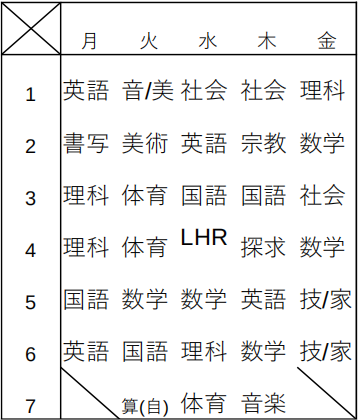
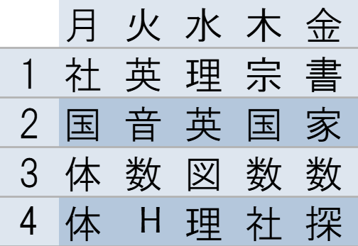

C1A bot
1.1.2 release
#C1A botとは？#
C1A bot とは、「伝説の石剣使いたっつん」によって製作された、Messaging APIを使用した便利な学校用機能が詰め込まれたLine botです。そもそもLine botとは、決まったメッセージに対して決まったメッセージを送り返したり、メッセージを配信したりする、色々なサービスに使われるLine公式が制作したサービスです。そのサービスを利用しBotなどを製作する人たちをLine Creatorsと呼びます。
#Schedules#
■通常

■短縮

#What's new？#
・最新情報
ver.1.1.2となりました！
C1A botのウェブサイトが公開されました！！！！！
ver.1.0.2となりました！！
ver.1.0.2では、「今日の給食」、「明日の給食」、「明後日の給食」に対応するようになりましたが、
たまに情報が間違っていることがある恐れがありますので、過信せずにご利用ください。
ver.1.0.1となりました！！
ver.1.0.1では、さまざまな日常的な会話に反応できるようになりました！